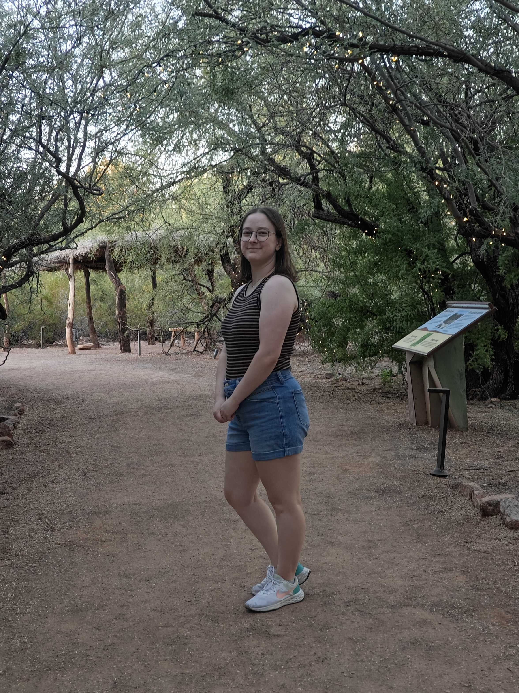

I grew up in a small town called Lone Jack, Missouri. After graduating from Lone Jack High School, I attended the University of Advancing Technology in Tempe, Arizona for a Bachelor of Science in Advancing Computer Science.
During my time at UAT, I was able to gain experience with a variety of programming languages and technologies, including HTML, CSS, JavaScript, C++, C#, and React Native. I also have experience with game engines such as Unreal Engine 4, Unity, and Construct.
After graduating with my degree, I ended up staying in Phoenix, hoping to find new opportunities in all directions. I am currently looking for a new role that would help me grow as a developer while utilizing the skills I acquired in college.